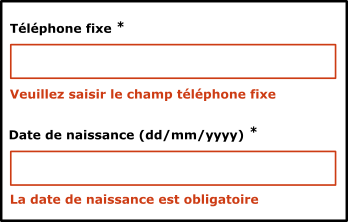
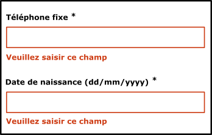

Exemples de formulaire
Préambule
Pour qu’un formulaire soit accessible à l’ensemble des utilisateurs, quelques règles doivent être respectées lors du développement. C’est ce que nous allons voir en détail dans l’exemple de formulaire accessible.
Exemple de formulaire accessible
Dans cet exemple, nous avons utilisé la librairie Boosted. Celle-ci permet d’obtenir des formulaires dont le design est conforme à la charte Orange. Nous utilisons également le plugin jQuery validate pour les contrôles de saisie.
Mise en place
Étiqueter les champs de formulaire
Tous les champs de formulaire doivent être étiquetés avec un libellé pertinent. Ainsi, le lecteur d’écran vocalisera automatiquement le libellé du champ de formulaire lors de la navigation.
De plus, les étiquettes de champs (label) doivent être le moins éloigné possible de leur champ afin de faciliter leur association pour des malvoyants ou des déficients cognitifs ou ayant des troubles de la concentration.
Pour étiqueter un champ, il existe plusieurs solutions.
Utilisation d’une balise label
Il s’agit de la solution standard, à utiliser en priorité, pour étiqueter un champ de formulaire, la mieux supportée par les outils d’assistance.
Utiliser une balise label et renseigner son attribut for avec l’id du champ de formulaire auquel elle est associée. C’est important pour les utilisateurs de lecteurs d’écran, mais cela permet également d’améliorer l’ergonomie du formulaire. En effet, lorsque le label est correctement associé à son champ de formulaire, il devient possible de cocher une case à cocher ou de sélectionner un bouton radio en cliquant directement sur son label.
<input type="checkbox" id="cgu">
<label for="cgu">Veuillez accepter les <abbr>CGU</abbr>.</label>
Dans de rares cas, il peut s’avérer qu’il ne soit pas nécessaire d’afficher un libellé (champ de recherche par exemple). Prévoir tout de même un libellé pour les lecteurs d’écran et le masquer en utilisant une des 3 méthodes suivantes :
Classe CSS de masquage accessible
C’est la méthode utilisée sur le second champ de saisie de l’adresse dans cet exemple de formulaire accessible (utilisation de la classe sr-only de Bootstrap/Boosted).
Code CSS
.sr-only {
position: absolute;
width: 1px;
height: 1px;
padding: 0;
margin: -1px;
overflow: hidden;
clip: rect(0, 0, 0, 0);
border: 0;
}
Code HTML
<label for="adresse">Adresse *</label>
<input name="adresse" data-displayname="adresse" class="form-control" id="adresse" aria-required="true" type="text">
<label class="sr-only" for="complement">Complément d’adresse</label>
<input class="form-control" id="complement" type="text">
L’utilisation du masquage accessible permet de masquer l’élément à l’écran tout en conservant sa vocalisation par les outils d’assistance. Attention, ne pas utiliser du masquage CSS classique (display: none; ou visibility: hidden;) car l’élément sera masqué également pour les lecteurs d’écran.
Consultez l’exemple sur le masquage accessible pour plus d’information.
Utilisation d’un attribut title
L’attribut title n’est pas utile pour l’accessibilité sauf dans ce cas précis. Il permet d’étiqueter un champ de formulaire de manière robuste. Il déclenchera également l’affichage d’une info-bulle au survol de l’élément avec la souris.
<input type="text" title="Rechercher dans le catalogue">
À noter : l’attribut title positionné ailleurs que sur un champ de formulaire (par exemple sur une image) ne fournit aucune garantie que son contenu sera vocalisé par un lecteur d’écran.
Utilisation de l’attribut ARIA aria-label ou aria-labelledby
Les attributs aria-label et aria-labelledby peuvent être utilisés pour étiqueter des champs de formulaire et leur support est bon dans les navigateurs :
- L’attribut
aria-labelledbypermet de préciser l’idd’un élément qui sera utilisé pour étiqueter le champ. - L’attribut
aria-labelpermet de préciser directement un label sous forme d’une chaîne de caractères.
<span id="label-adress">Adresse *</span>
<input type="text" aria-labelledby="label-adress">
<input type="text" aria-label="complément d’adresse">
Par exemple, pour entrer une date sous forme de 3 champs, un pour le jour, un pour le mois et un pour l’année, voici une solution possible :
<label for="jourNaissance">Date de naissance</label>
<input type="text" id="jourNaissance" aria-label="jour de naissance (JJ)">
<input type="text" id="adresse" aria-label="mois de naissance (MM)">
<input type="text" id="ville" aria-label="année de naissance (AAAA)">
Le placeholder et le label
L’attribut placeholder ne peut pas être utilisé à la place d’un label. En effet :
- le texte du
placeholderqui s’affiche dans le champ n’est généralement pas assez contrasté ; - il s’efface à la saisie du contenu dans le champ (entraîne des difficultés en cas de déficience cognitive) ;
- le
placeholdern’est pas toujours lu par les aides techniques ; - il empêche l’utilisateur de vérifier la saisie avant de valider s’il est utilisé à la place du label ;
- il rend les corrections difficiles en cas d’erreur si pas de label affiché ;
- il rend les champs de saisie moins visibles que ceux sans
placeholder.
En revanche, le placeholder peut servir de guide, d’aide pour remplir le champ (par exemple, proposer une valeur attendue valide) : ne pas hésiter à l’utiliser pour ce type de besoin.
<div class="form-group">
<label for="numero-serie">Veuillez saisir le numéro de série *</label>
<input type="text" name="serie" data-displayname="numéro de série" class="form-control" id="numero-serie" aria-describedby="helpblock"
aria-required="true" placeholder="exemple : TS-0000">
</div>
Préciser les champs obligatoires
Il faut bien sûr clairement indiquer pour tout utilisateur le fait qu’un champ soit obligatoire. Ceci peut être fait en utilisant un signe distinctif (mention, pictogramme, image, etc.) mais aussi avec un simple texte (par exemple, « obligatoire ») dans le label du champ. Rajouter, si besoin, une mention au début du formulaire pour indiquer que le symbole ou le pictogramme signale un champ obligatoire.
Les champs obligatoires doivent aussi être indiqués dans le code à l’aide de l’attribut HTML5 required ou de l’attribut ARIA aria-required notamment pour les déficients visuels.
<input type="text" name="telephone" required>
<input type="text" name="telephone" aria-required="true">
Préciser le type ou le format attendu
Lorsque c’est nécessaire, préciser le type ou le format de la donnée attendu. Pour que cette information soit vocalisée automatiquement par les lecteurs d’écran, préférer simplement mettre ces informations dans la balise label ; sinon utiliser un attribut aria-describedby.
<div class="form-group">
<label for="numero-serie">Veuillez saisir le numéro de série *</label>
<input type="text" id="numero-serie" aria-describedby="helpblock" aria-required="true">
</div>
<span id="helpblock" class="help-block">Numéro de série commençant par "TS-" suivi de 4 chiffres (exemple: "TS-4521").</span>
Regrouper les informations de même nature
Les champs de même nature doivent être regroupés, si nécessaire (champs ayant la même étiquette ou étiquette insuffisante à elle seule pour comprendre quoi mettre dans le champ), à l’aide d’une balise fieldset. Le fieldset doit également posséder comme premier enfant une légende explicite (balise legend). Le fieldset/legend est nécessaire, notamment, lorsque le legend est utile à la compréhension ou l’individualisation (différencier des label identiques dans un même formulaire) des balises label incluses dans le fieldset.
<fieldset>
<legend>Couleur du capot de votre téléphone</legend>
<input type="radio" name="couleur" id="blanc" checked>
<label for="blanc">Blanc</label>
<input type="radio" name="couleur" id="noir">
<label for="noir">Noir</label>
</fieldset>
<fieldset>
<legend>Adresse de livraison</legend>
<label for="nom">Contact</label>
<input type="text" id="nom">
<label for="adresse">Adresse</label>
<input type="text" id="adresse">
<label for="ville">Ville</label>
<input type="text" id="ville">
</fieldset>
<fieldset>
<legend>Adresse de facturation</legend>
<label for="nom1">Contact</label>
<input type="text" id="nom1">
<label for="adresse1">Adresse</label>
<input type="text" id="adresse1">
<label for="ville1">Ville</label>
<input type="text" id="ville1">
</fieldset>
Contrôle de saisie
Lors de la validation, si des champs obligatoires ne sont pas renseignés, ou si le format de la donnée saisie n’est pas valide, il faut prévenir l’utilisateur.
Utiliser l’attribut aria-invalid pour indiquer une erreur de saisie.
Indiquer dans le code les champs en erreur.
<input type="text" name="telephone" aria-invalid="true">
Avertir l’utilisateur en cas d’erreur de saisie
Si des erreurs de saisie empêchent la validation du formulaire, il faut en avertir l’utilisateur. Bien souvent des messages apparaissent à l’écran, mais par défaut ils ne sont pas vocalisés au lecteur d’écran. Une des solutions consiste à déplacer automatiquement le focus dans le premier champ en erreur. Ceci aura pour effet de faire vocaliser le ou les libellés du champ de saisie en question.
Dans cet exemple de formulaire accessible, les messages d’erreurs sont déclarés comme des label et sont associés aux champs de saisie. Ainsi lorsque le focus arrive dans un champ, le lecteur d’écran vocalise le libellé du champ puis le message d’erreur associé.
Ce mécanisme est pris en charge directement par le plugin jQuery validate.
<label for="numero-serie">Veuillez saisir le numéro de série *</label>
<input aria-invalid="true" class="error" id="numero-serie" aria-describedby="helpblock" aria-required="true" type="text">
<label for="numero-serie" class="error" id="numero-serie-error">Le champ numéro de série est obligatoire.</label>
Attention, bien qu’il soit tout à fait valide d’utiliser plusieurs label pour un même champ de formulaire, il est pour le moment conseillé de doubler avec un attribut aria-labelledby. Consulter l’article de Steve Faulkner pour plus d’information sur le sujet.
<label id="serie-label" for="numero-serie">Veuillez saisir le numéro de série *</label>
<input aria-invalid="true" class="error" aria-labelledby="serie-label serie-error" id="numero-serie" aria-describedby="helpblock" aria-required="true" type="text">
<label id="serie-error" for="numero-serie" class="error" id="numero-serie-error">Le champ numéro de série est obligatoire.</label>
Afficher des messages d’erreur explicites et, si besoin, suggérer des corrections
Les messages d’erreur affichés doivent être pertinents et, si besoin, proposer des exemples d’entrée valide.
Exemple valide :

Exemple non-valide :
